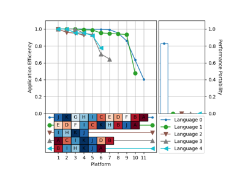
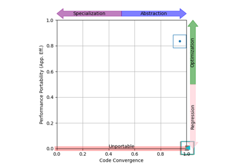

Case Studies¶
Complete end-to-end examples showcasing library capabilities with real data.
BabelStream¶
BabelStream is a popular benchmark for measuring the achievable memory bandwidth. Implementations are available using multiple programming languages.

BabelStream Cascade Plot

BabelStream Navigation Chart